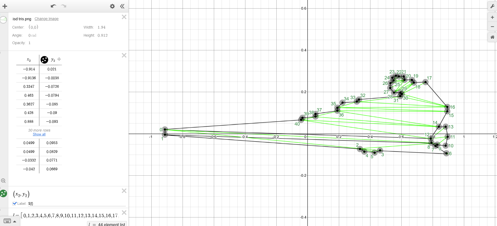
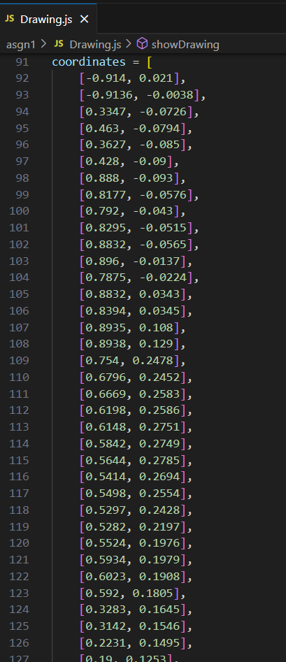

Notes to Grader
So for the drawing we're supposed to do, I actually didn't do it on paper at all. However, I believe the method I used to make the drawing
makes up for it, and I think should count for the Awesomeness category.
So firstly, I decided I wanted to draw out the side profile of the Imperial I class Star Destroyer, so I scoured Google until I found an image I liked.
The base image I used.
I opened the image in Photoshop and I traced out an approximate outline of the ship. After that, I drew dots at the corner points of
my new outline, representing the vertices of the drawing. Then I drew lines between the dots in such a way that the entire drawing was comprised of
triangles. I have also uploaded the PSD file as star destroyer.psd in the images folder, alongside
the other screenshots I have embedded in this page.
The Star Destroyer with my outline (somewhat hard to see). The Star Destroyer, but with the green dots and lines and stuff I drew on it to help me figure out the triangles
The Star Destroyer, but only my outline and triangle drawings. It turns out I forgot to close a couple of
triangles in this drawing, but I later fixed it when I was coding the drawing.
Now once I finished this drawing, I opened it in Desmos in order to actually map the dots on my drawing to actual coordinates. I scaled the image down so that it fit between (-1, -1) and (1, 1), and proceeded to manually add
points on top of my drawing, noting down the coordinates of each vertex. This was harder and more time consuming than it sounds, as Desmos for whatever reason kept screwing up the scaling of my image, and thus kept
messing up all the points I had placed down. I had to restart several times (thank you Desmos), but in the end I managed to do it. The link to the Desmos graph can be found here.

My Desmos graph to calculate each vertex's coordinate, as well as help me figure out indices for each vertex.
Now, to actually display the thing in WebGL. I first begain by creating a new shape class, ScaleneTriangle.js. The regular Triangle.js class is specifically coded to only draw equilateral triangles of a particular size, and
I did not want to further mess with it. Hence, I wrote ScaleneTriangle.js, a modified version of the Triangle class that allows me to specify any three coordinates to use for the triangle's vertices, irrespective of the triangle's position.
In the spirit of organizing files that Prof. Davis wanted us to adhere to for this assignment, I separated out the drawing function and data into its own separate file, Drawing.js.
Within this file contains one very large array of vertex coordinates, imported from my Desmos graph.

My coordinates, imported from Desmos.
I had labelled all the vertices in Desmos with a number from 0 through 40, representing the index of that vertex in my new array. Thus, drawing the Star Destroyer on screen became a matter of checking Desmos to see which three indices I needed to pass to ScaleneTriangle.js and passing in those indices. The code I wrote would take the given index, look it up the coordinate in the array and assign itself the proper position on the screen.
In addition to adding a button to display my Star Destroyer on the screen, I also added a checkbox which, when enabled, forgoes the standard gray and black colors. Instead, it randomly assigns each triangle in the drawing a random color so that the user can see all the triangles making up the drawing. All in all, there are a grand total of 41 vertices and 40 triangles making up my image.
I hope this satisfies both the drawing and the Awesomeness requirement. Thank you for reading this long file :)